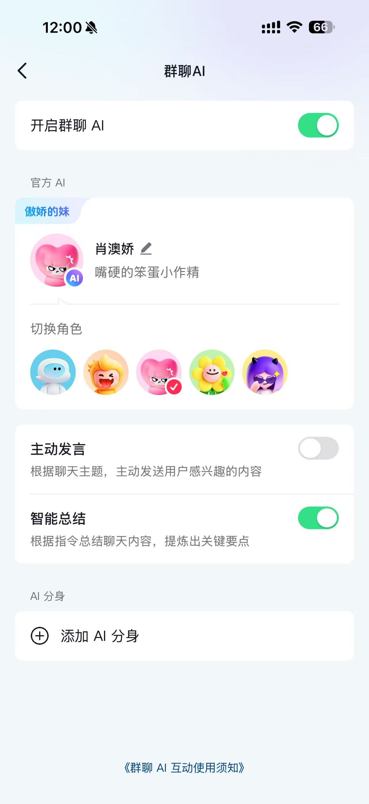

先马电商 · 数智中心AI Training
2026

HOW TO WORK WITH AI
如何与 AI 协作
从认知到实操,以 ChatGPT 为例
AI 不是神,是工具
数智中心 · 星河界 梦蝶
目录Contents02
全场地图
今天讲什么
01认知 · AI 不是神
02方法 · 怎么和 AI 协作
03工具 · ChatGPT 怎么用
04实操 · 现场演示落地
如何与 AI 协作
认知 → 方法 → 工具 → 实操
开场认知Why & Boundary03
WHY 为什么要学
AI 已进入日常工作
重点不是会不会被替代
而是会不会用
BUT 但 AI 不是神
会理解错、答偏、编造
人负责判断和结果
AI 负责辅助提速
所以今天讲的,是 怎么用对它
开场认知
Human decides · AI accelerates
AI 就在身边Already here00
不信?看看你手机里这几个 App
AI 其实早就在你身边

抖音 群聊AI 帮查帮聊
支付宝 支小宝AI 生活助理
美团 问小团AI 推荐吃喝玩乐
AI 其实早就在你身边
你天天在用,只是没注意
基础认知What is AI04
3 分钟快速过
什么是 AI 和大模型
1
AI 是什么
能像人一样学习、理解和判断的计算机程序
2
大模型是什么
读过海量资料的"超级大脑"
3
能力为何不同
训练数据和规模不一样
4
擅长与不擅长
擅长归纳表达,不擅长算数和事实核查
什么是 AI 和大模型
Foundation
方法篇Method05
PART 01 · METHOD
怎么和 AI 协作
AI 回答的质量,取决于你给的输入质量
讲清背景
明确目标
持续追问
方法篇
Input decides output
上下文管理Context06
为什么上下文决定结果
把信息
说完整
AI 不知道你的现状,
你说多少,它才懂多少
你说多少,它才懂多少
背景 + 目标 + 限制
三件事说清,答案立刻变准
三件事说清,答案立刻变准
✓
落地提示:在 ChatGPT 里,把背景信息放在对话最开头
上下文管理
Context is everything
互动 · 找茬Spot it00
互动 · 挑毛病
这个提示词,差在哪?
"写个活动方案"
它到底缺了什么?按 → 看答案
互动 · 找茬
What's missing
互动 · 揭晓Answer00
答案
啥都没说,AI 只能瞎猜
✗
没角色 —— 谁来写?
✗
没背景 —— 什么活动?
✗
没目标 —— 想达成啥?
✗
没约束 —— 预算?时间?
补上 背景 + 目标 + 限制,答案立刻不一样
互动 · 找茬
Context is everything
上下文压缩Compress07
长信息不能直接丢给 AI
提取关键,结构化
01
删掉废话
去掉寒暄、重复、无关细节,只留事实
02
提炼要点
一段话拎出 3-5 条关键信息
03
结构化
用清单、分点的方式喂给 AI
这个能力不是 ChatGPT 独有的,所有 AI 都通用
上下文压缩
Extract & structure
互动 · 压缩Compress00
互动 · 你来提炼
这段客户长消息,关键事实是哪几条?
客户消息
在吗亲?我上周三下的单一直没收到,你们物流也太慢了吧!我是买来下周参加婚礼穿的,现在都还没到我很着急,能不能帮我催一下?如果周五前到不了我就只能退了,毕竟穿不上留着也没用……
试着删掉废话,提炼成 3 条关键事实 —— 按 → 看答案
互动 · 上下文压缩
Extract the facts
互动 · 揭晓Answer00
答案
寒暄和情绪删掉,只留这 3 条
1上周三下单,至今未收到
2用途:下周婚礼穿,时间紧
3底线:周五前到不了就退货
把这 3 条喂给 AI,比甩一整段原话准得多
互动 · 上下文压缩
Signal over noise
提示词Prompt08
提示词怎么写 · 记住这个公式
角色 + 背景 + 任务 + 要求 + 输出格式
这个结构是通用的——任何 AI 都吃这一套
改语气
改长度
改结构
换版本
提示词公式
Role + Context + Task + Rule + Format
互动 · 提示词 PKWhich one00
互动 · 你来选
同样是让 AI 回复差评,哪个写法最好?
A帮我回复差评
B帮我回复这个差评,客户嫌物流慢
C你是资深客服,客户因物流慢给了差评(附原文),用诚恳、不卑不亢的语气,先共情再给方案,100 字内
互动 · 提示词 PK
先想想,按 → 看答案
互动 · 揭晓Answer00
答案 · C
C 最好——因为它套全了提示词公式
A啥都没说,AI 只能瞎编
B有了背景,但没角色、没要求、没格式
C角色(资深客服)+ 背景(物流慢差评)+ 任务(回复)+ 要求(先共情再方案)+ 格式(100字内)
互动 · 提示词 PK
Role + Context + Task + Rule + Format
苏格拉底式提问Socratic09
适合需求不明确的场景
先问清楚
再开始
让 AI 先反问你,
不是急着给答案
不是急着给答案
1
一次问一个
别一口气抛一堆问题
2
理解够了再输出
信息充分,结果才靠谱
苏格拉底式提问
Ask first, answer later
互动 · 该先问啥Ask first00
互动 · 你来想
这么模糊的需求,该先问清楚什么?
同事消息
帮我写个 PPT 吧
直接写肯定不对路 —— 你觉得该先问清哪几件事?按 → 看答案
互动 · 苏格拉底式提问
Clarify before answering
互动 · 揭晓Answer00
答案
先问清这几点,再动手才靠谱
?
给谁看?什么场合讲?
?
讲什么主题?想达成啥?
?
大概多少页?讲多久?
?
有没有现成素材?什么风格?
一次问一个,问清了再动手,别一上来就闷头写
互动 · 苏格拉底式提问
Ask one at a time
知识沉淀Memory10
什么该长期沉淀,什么只用一次
让方法沉淀下来
S
SOP
标准流程,固定不变的步骤
F
FAQ
高频问题的标准答案
T
话术库
不同场景的沟通模板
K
知识库
产品、政策等背景资料
记忆和知识沉淀
Turn methods into assets
工具篇ChatGPT11
PART 02 · TOOL
方法,在 ChatGPT 里
前面讲的每个方法,工具里都有对应
计划模式
模型切换
追问迭代
工具篇
Method meets interface
SkillReusable12
把方法固化
Skill
任务方法包
常用任务做成模板,
下次直接调用
下次直接调用
1
适合重复、标准化的活
2
底层就是提示词 + 上下文
换个工具也能用——把常用任务做成模板就行
把方法固化:Skill
Make it reusable
实操演示Live Demo13
现场跑一遍 · 空格键推进
从模糊需求到可落地
1
模糊需求
先有个大概想法
2
补充上下文
对应第 6 点
3
写结构化提示词
对应第 8 点
4
生成初稿
让 ChatGPT 先出一版
5
追问优化
不满意就继续调
6
可落地结果
拿去就能用
实操演示
同样的方法,换 AI 也一样
案例替换By Role14
同一套方法,不同岗位
换个岗位也能用
客服
处理差评 · 解释政策 · 安抚情绪
运营
写文案 · 做活动方案 · 数据分析
设计
找灵感 · 写需求 · 出方案初稿
行政
写通知 · 整理纪要 · 排流程
财务
整理报表说明 · 解释制度
方法一样,只是换了任务
案例替换
One method, every role
结尾Takeaway15
AI 不是替代人,
而是放大人的能力
而是放大人的能力
人负责判断,AI 负责提速
会不会用 AI,会决定效率差距
数智中心 · 星河界 梦蝶
Thank you